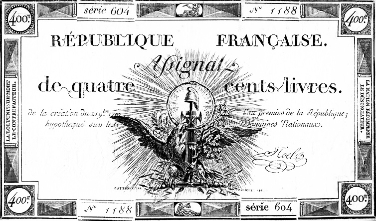

Assignats or Death : Inflationary Finance in Revolutionary France
European Economic Review
I am an assistant professor at the University of Florida’s Hamilton Center. My research focuses on political economy and economic history.
I also serve as an Associate Editor at Public Choice.
I live with my wife Mary and my three sons, Émile, Julien & Léo.
CV / VITAE
European Economic Review
explorations in economic history
2022
Public Choice
2022 · with Ennio Piano
European Review of Economic History
2019 · with Ennio Piano
The Review of Austrian Economics
2018 · with Ennio Piano
The Review of Austrian Economics
2020
R&R at Journal of political economy
2024 · with Ronan Tallec
2024 · with Ronan Tallec and Anne Alonzo
In: Economic Policy and the History of Economic Thought.